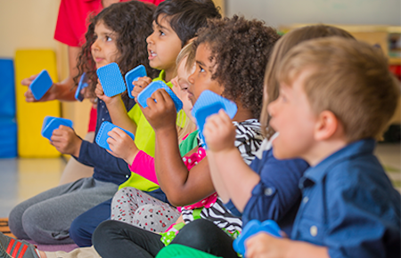
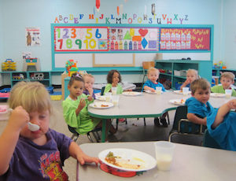

Preschool & Pre K
Discovery is the middle name for our Preschool and Pre-Kindergarten programs in which the world of wonder and imagination opens up before your child’s eyes. Kids Klub is dramatically different than all other preschools in Pasadena, CA and San Gabriel/Rosemead, CA; traditional preschool teachings such as the letters of the alphabet, linguistics, motor skills, counting & numbers, and color & shape recognition are expanded to embrace the arts and sciences. Through our monthly and weekly themes such as Marine Animals, Countries of the World, and Ecology & Environment, our children learn about the world around them. Activities, science and art projects, nature walks, computer learning, and cooking projects are coordinated with the themes to provide an integrated learning experience. Outdoor play and freeplay are incorporated as well, yet, schedules and routines are in place to provide the children with a familiar and predictable experience.
Kids Klub’s Pre-Kindergarten program has developed a reputation for preparing your child for acceptance into Pasadena’s best private schools. Our program combines education, play, and discipline to provide your child with the skills and mannerisms needed to excel in kindergarten and grade school, as well as providing the social experiences needed to produce a balanced and well-rounded child. Additional advantages are afforded to your child through their exposure to our computer center and through our Spanish classes taught to the three and four year old groups. In addition, our center in San Gabriel/Rosemead offers Mandarin in the afternoon curriculum. Both centers facilitate potty training for young Preschoolers when the child and parents are ready.
A variety of programs are available from full time to part time to accommodate most schedules. Extracurricular classes are available in the evening such as gymnastics, dance, and karate. In addition to these programs, Kids Klub San Gabriel/Rosemead has Saturday Chinese School for ages 3 to 8. Our staffing ratio for preschool is 6 to 1 for 2 year olds, 8 to 1 for 3 year olds and 11 to 1 for 4 year olds.